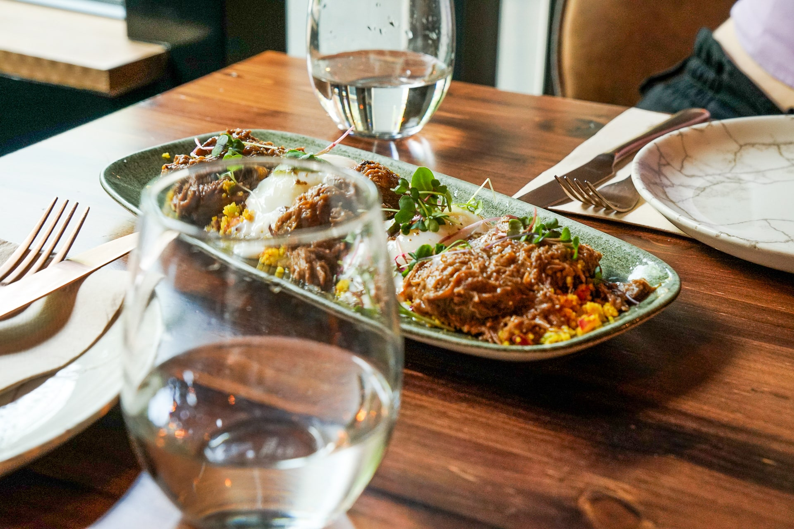
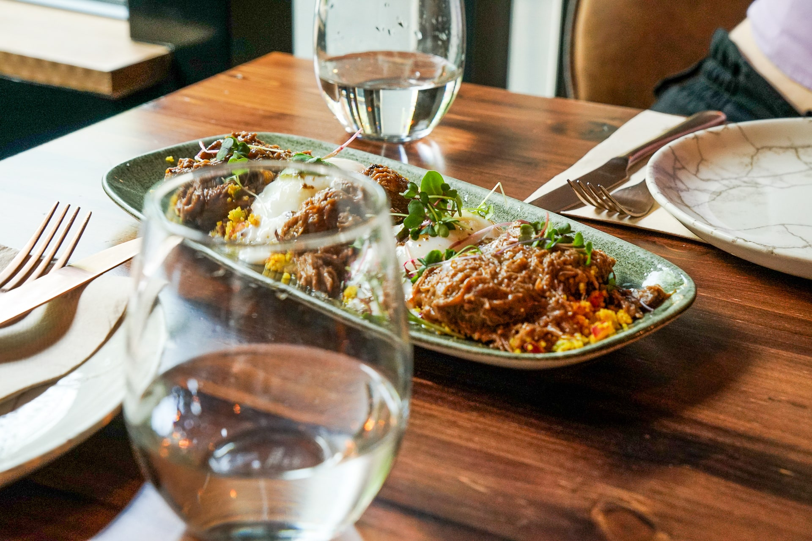
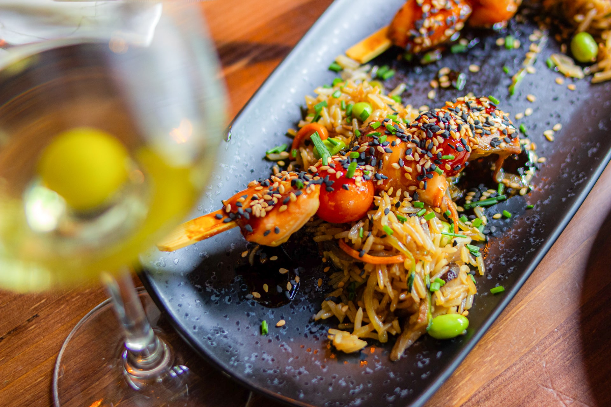
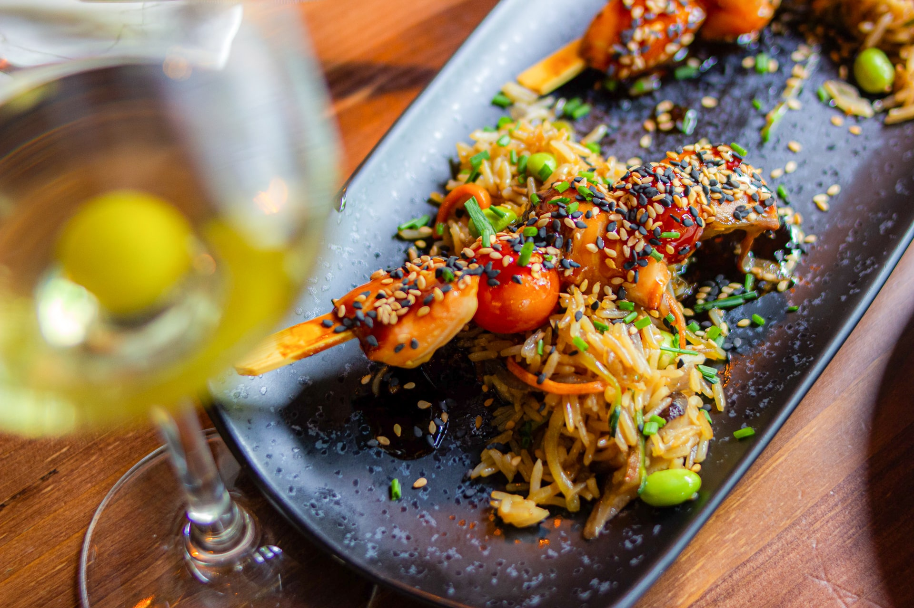
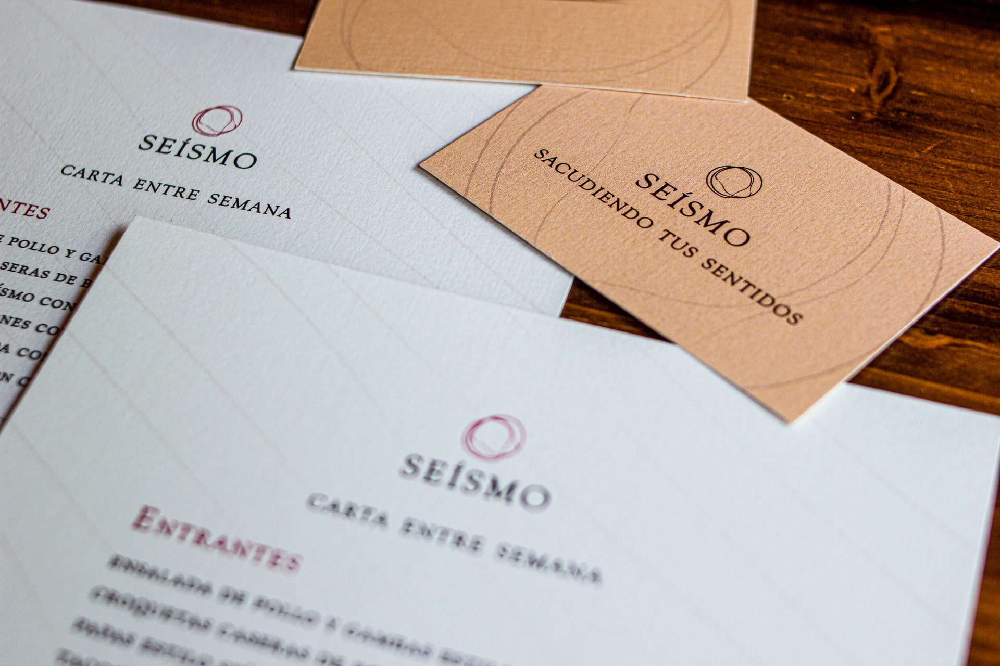
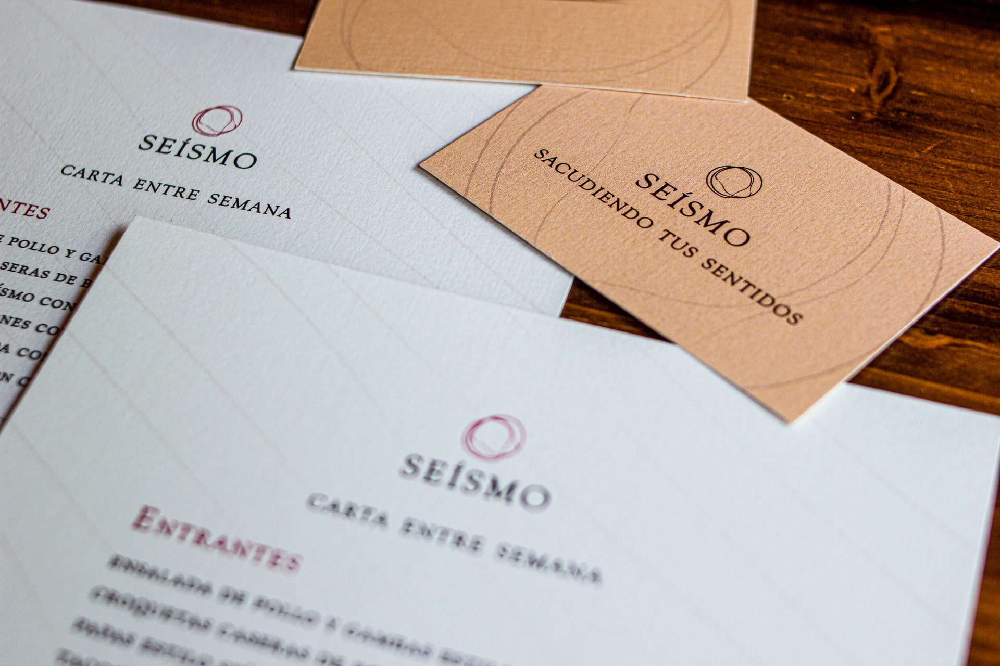
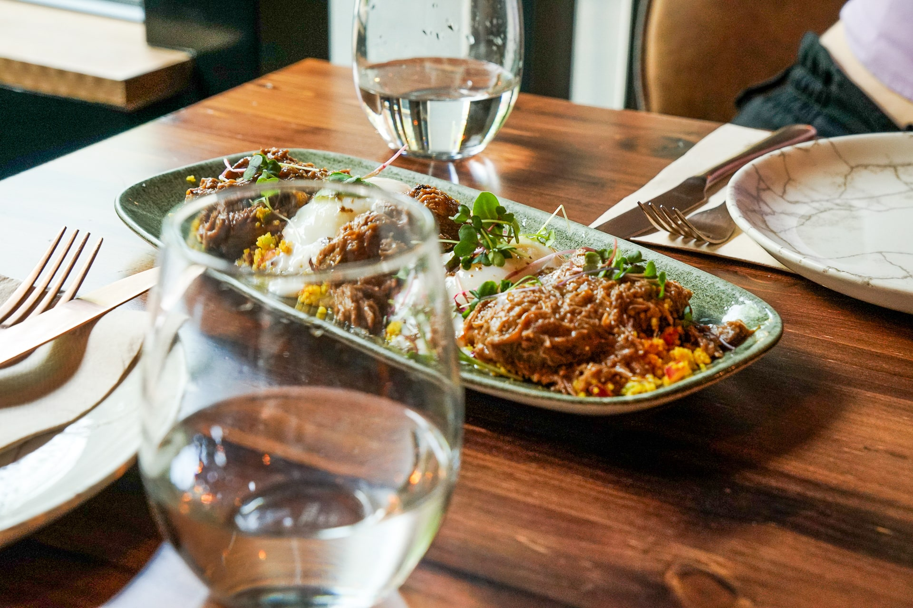
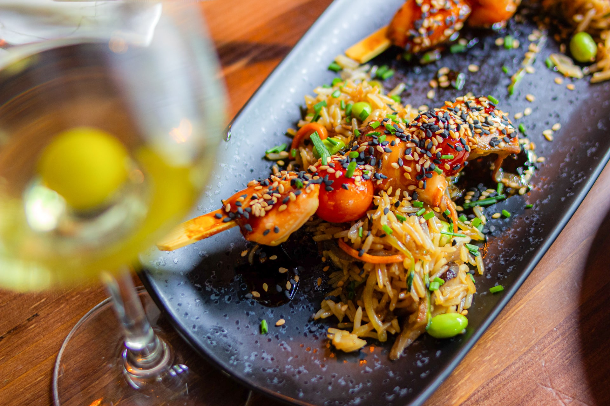
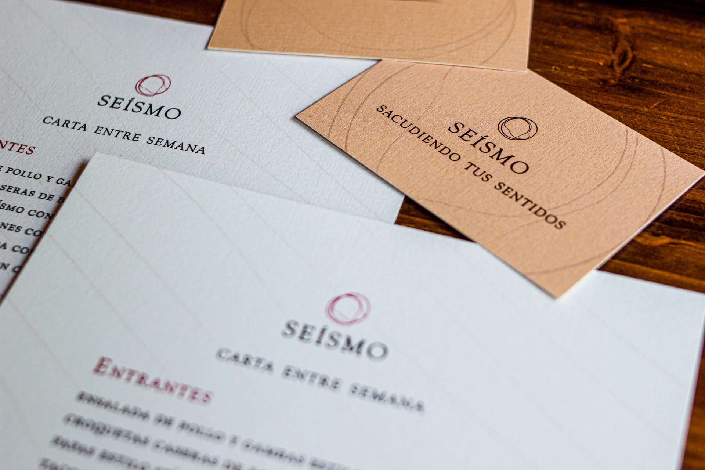

 



 

I've always felt a particular attraction towards restaurant design, both in the professional and the personal senses.
For this project I crafted a restaurant identity from scratch, and then produced the impression of all its printed elements, and finished the process by directing some space & gastro photography.
The project seeks to portray the opening of a new culinary space in town, from the presentation of its identity to the photography of its elements for social media & other supports.


